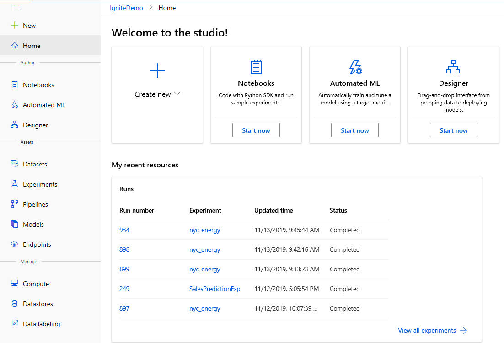
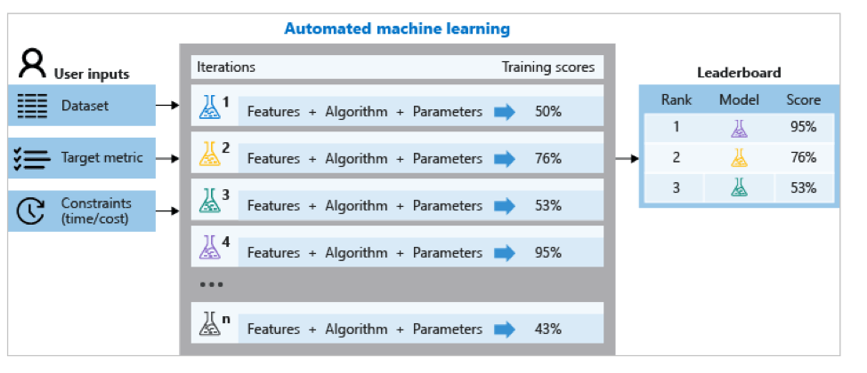
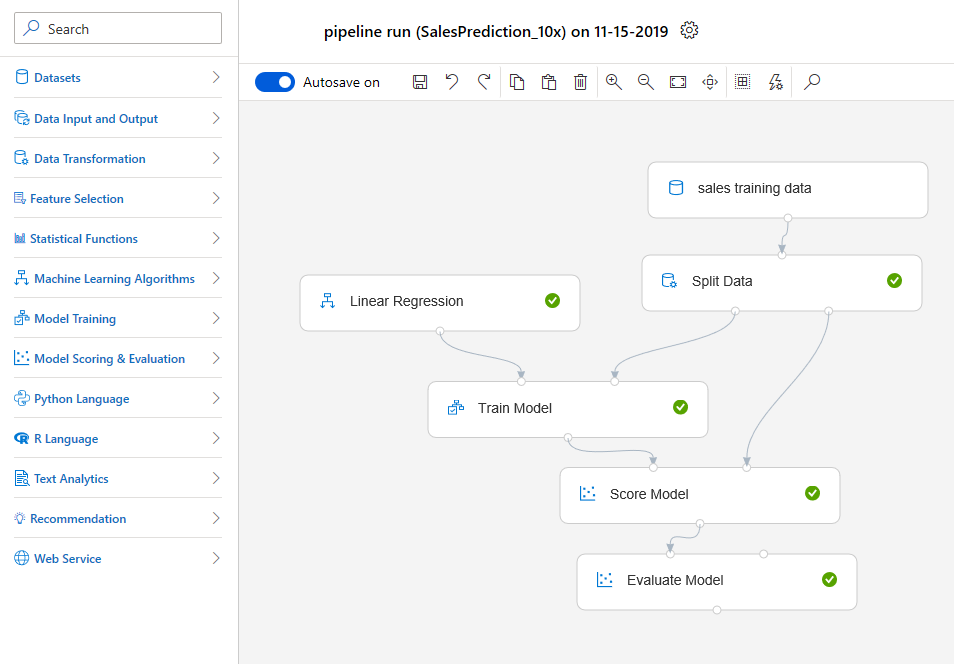

Turning the promise of the citizen data scientist into reality
Artificial intelligence and machine learning are pivotal technologies for businesses, allowing them to dig into their data to extract outcomes, predictions, and results valuable enough to steer business decisions and powerful enough to deliver actual ROI.
Just take a look at how the data from millions of daily sale transactions have improved customer experience for millions of Walgreens Boots shoppers through their Advantage program; how Schneider Electric is no longer spending $20K a day on maintenance costs; the way global fashion retailer ASOS is turning gigabytes of data into better recommendations for its 19.2 million customers and boosting sales; or the countless other examples demonstrating AI’s ability to deliver powerful business outcomes.
As AI and machine learning become integral to every part of a business, it's essential that all employees have access to the tools and solutions that machine learning offers. It's clear that business domain experts – those with the business knowledge to identify essential challenges and opportunities – are in critical need of access to these tools. The problem? They don't have the technical expertise. In other words, they can't code.
That's why companies are embracing a vital new role in their organizations: the citizen data scientist. These new data scientists are bridging the skills gap on the business side, by leveraging automated and other powerful data science technologies.
Gartner describes the citizen data scientist as a person whose job function lies outside the statistics and analytics, but can still generate machine learning models with advanced diagnostic analytics or predictive and prescriptive capabilities.
Companies like global energy giant BP are seeing the tremendous advantage of empowering their citizen data scientists, said Lance Goodship, Enterprise Architect, AI at BP. These are the employees who have valuable domain expertise, who only needed a way to easily transfer that knowledge into the AI world.
"Because of the significant commercial impact of using machine learning predictions, we need to approach it as a collaborative, co-creation process between the upstream engineers, the data scientists, and the business product owners,"
The Microsoft Azure Machine Learning Studio web experience enables data scientists and data engineers of all skill levels to complete end-to-end machine learning tasks, including data preparation, model training, deployment, and management in a seamless manner. Tools like automated machine learning and Azure Machine Learning designer are unlocking citizen data scientists of all skill levels.
Inside the Studio, users can choose their mode of authoring based on their skill levels: coding using Jupyter notebooks in R, python for the experienced data scientist, or automated ML UI or designer.
Forrester predicts the machine learning market will grow at a 21% CAGR through 2021 – which will make the market for data scientists even more competitive, as they're an essential piece of the puzzle.
The rise of the citizen data scientist came about because there's a steep learning curve associated with AI, which requires the specialized skill set of a PhD-wielding data scientist. However, citizen data scientists haven't replaced that professional role. With their deep understanding of mathematics, statistics, and computer science, the pros are able to put together machine learning models to answer the most complex business problems they've been set to solve.
In these models there may be dozens, hundreds, or even thousands of different parameters to consider. Identifying which parameters have the most impact, identifying what type of solution is right for that industry, for that use case, for that problem set — it’s an art and a science that's resource-intensive, requiring both significant domain knowledge and time to produce and compare. It means that data scientists and developers generally only have the capacity to focus on a few projects at a time. Automation has changed that completely.

The automated machine learning capability in Azure Machine Learning unlocks the ability for data scientists, analysts, and developers to build highly accurate models efficiently. Models are built automatically, and then selected intelligently for training, with the best one recommended for a scenario and data set.
For instance, at Schneider Electric, data scientists are using automated machine learning capabilities to intelligently select the optimal machine learning models and automatically tune machine model hyperparameters to save time and improve efficiency.
"Automation helped our operators increase efficiency by 10 to 20% in just two days,"
"A typical maintenance issue costs up to $20,000 a day, not including parts and labor," he adds. "Now we can immediately identify and fix any problems." Timely maintenance can also extend the life of a pump, with proactive detection stretching a pump’s service from three years to as much as 10 years.
The result is that high-value projects take considerably less time, with part of that machine learning workflow automated, so data scientists can spend more time focusing on other business objectives and collaborating with the domain experts who have the business-side knowledge. This helps level up the ways that both sides can tackle the challenges and opportunities the company has coming for it.
“Instead of worrying about infrastructure, our data scientists spend time focusing on their models and running experiments, without any barriers to how they want to create their algorithms, That’s massively beneficial for us.”
Azure Machine Learning has also had significant impact on an organizational level.
“It's been a vessel for organizational change, We can solve not only technical challenges, but also our organizational challenges.”
Azure Machine Learning designer is the real game-changer. It is an innovative drag-and-drop visual interface that lets any user create and deploy machine learning models – no coding required.
Previously, deploying a trained model to a production environment required a data scientist's level of expertise – knowledge of coding, model management, container service, and web service testing. With designer, the user can drag and drop to author an experiment, and then run it – meaning any business user can deploy a trained model with just a few clicks.
"We can be more innovative as a company by giving the brightest minds in our workforce a platform to drive our business into the future,"
The expertise of employees with deep business insight and an understanding of the challenges that companies face is critical to leverage as the look to scale their data science resources and uncover deeper insights.
The designer drag-and-drop interface also makes the technology more available for newly-minted data science grads who are filling the skills shortage. Designer considerably amplifies the ability of someone new to machine learning to build and run experiments. With just a few clicks, they can quickly create complex models for production, even as they improve their coding skills. They’re also able to do preliminary work to hand off to their more experienced colleagues, further easing the demand on the most experienced professionals and increasing their availability within the organization.

But perhaps the biggest advantage of designer is that now the wider audience of business users who don’t have advanced data science and coding knowledge now have access to AI, considerably amping up the power of the citizen data scientist's work to effect real change in the enterprise, create efficiencies, and help close the skills gap.
With designer, the user drags and drop to author and run an experiment with just a few clicks. From there, every time an experiment is submitted to run, the machine learning platform automatically scales for larger data sets or complex models from single node to multi. It removes the need to think about expanding production work with bigger data – any experiment can just start with small models.
Once a model is deployed, designer lets the user test the web service to make sure it has deployed correctly. All web service inputs are pre-populated, and the web service API and sample code are also automatically generated. These are procedures that normally used to take hours to perform, but the visual UI lets a user handle it with just a few clicks.
Automation has dramatically simplified machine learning tasks for data scientists; now simplified, it has thrown open the door to the domain experts across the company, the executives and business managers, and analysts in the trenches who can now match up their expertise with the tech that can extract its enormous potential, without writing a single line of code.
They're simply bringing their data to the table now, and with a few clicks, training on it. Automated machine learning presents the best model, customized to the user’s data, and the user then deploys it, sending it off to generate future predictions, infused with business domain insight, on new data.
Tools like the drag and drop designer in Azure Machine Learning and automated machine learning capabilities shift the paradigm. Machine learning used to be a black box, or perceived as unreachable, very complicated, and unusable by anyone who couldn't code.
The game has changed now. AI has been democratized, and is within reach of everyone in the enterprise who wants to achieve compelling and effective business results.